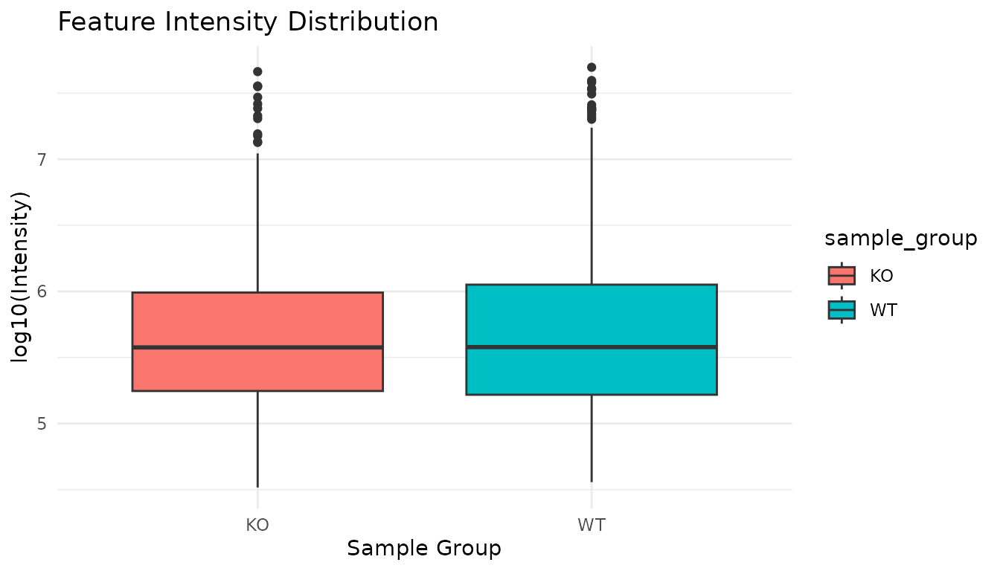
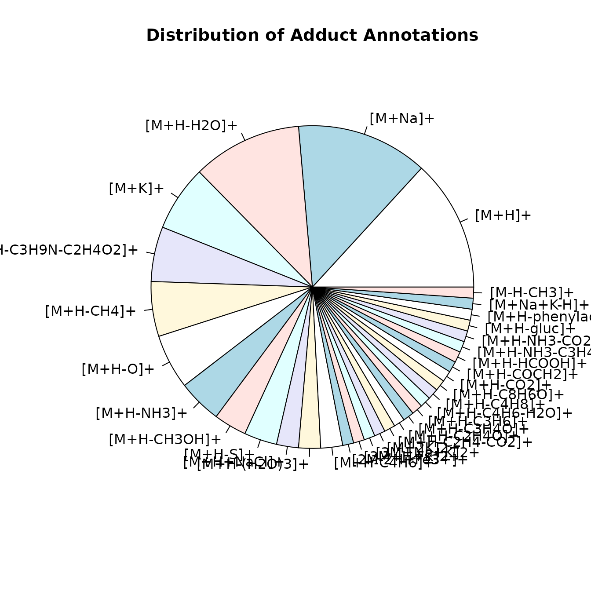

Creating Long-Format Peak Tables with Optional CAMERA Annotations
Source:vignettes/long-format-peaklist.Rmd
long-format-peaklist.RmdIntroduction
The tidyXCMS package provides functions to work with
XCMS metabolomics data in a tidy, long-format structure. This vignette
demonstrates how to use the XCMSnExp_CAMERA_peaklist_long()
function to create a comprehensive peak table that integrates:
- Peak detection results from XCMS
- Feature grouping (correspondence) information
- CAMERA annotations (isotopes, adducts, pseudospectrum groups) - optional
- Sample metadata
The resulting long-format table has one row per feature per sample,
making it ideal for downstream analysis with tidyverse tools like
dplyr and ggplot2.
Note: CAMERA annotations are optional. You can
create a peak table without CAMERA annotations by simply omitting the
xsAnnotate parameter.
Example Workflow
Load Example Data
We’ll use the xmse dataset from XCMS, which contains
preprocessed LC-MS data from wild-type and knockout samples. This
dataset already has peak detection and feature grouping completed.
# Load example data from XCMS (already preprocessed)
xdata <- loadXcmsData("xmse")
# Fix file paths to use correct system-specific location
# Get current dataOrigin values (these are repeated for each spectrum)
current_origins <- spectra(xdata)$dataOrigin
# Get unique file paths
unique_old_paths <- unique(current_origins)
# Extract relative paths (e.g., "KO/ko15.CDF", "WT/wt15.CDF")
relative_paths <- sub(".*/faahKO/cdf/", "", unique_old_paths)
# Get the correct base path for faahKO package on this system
cdf_path <- file.path(find.package("faahKO"), "cdf")
# Reconstruct full paths
unique_new_paths <- file.path(cdf_path, relative_paths)
# Create a named vector for path mapping
path_map <- setNames(unique_new_paths, unique_old_paths)
# Replace all dataOrigin values (vectorized replacement)
spectra(xdata)$dataOrigin <- path_map[current_origins]
# Check the sample information
sampleData(xdata)
#> DataFrame with 8 rows and 4 columns
#> sample_name sample_group spectraOrigin sample_type
#> <character> <character> <character> <character>
#> 1 ko15 KO /usr/local... QC
#> 2 ko16 KO /usr/local... study
#> 3 ko21 KO /usr/local... study
#> 4 ko22 KO /usr/local... QC
#> 5 wt15 WT /usr/local... study
#> 6 wt16 WT /usr/local... study
#> 7 wt21 WT /usr/local... QC
#> 8 wt22 WT /usr/local... study
# Check results
cat("Dataset contains", nrow(chromPeaks(xdata)), "peaks across",
length(unique(chromPeaks(xdata)[, "sample"])), "samples,",
"grouped into", nrow(featureDefinitions(xdata)), "features\n")
#> Dataset contains 3651 peaks across 8 samples, grouped into 351 featuresCreate Long-Format Peak Table (Without CAMERA)
You can create a long-format peak table directly from the XCMS results without using CAMERA annotations. This is useful when you want to quickly explore your data or when CAMERA annotations are not needed for your analysis.
# Create peak table without CAMERA
peak_table_no_camera <- XCMSnExp_CAMERA_peaklist_long(xdata)
# Check the structure
dim(peak_table_no_camera)
#> [1] 2808 28
# View first few rows
head(peak_table_no_camera)
#> # A tibble: 6 × 28
#> sample_name sample_group spectraOrigin sample_type fromFile feature_id f_mzmed
#> <chr> <chr> <chr> <chr> <dbl> <int> <dbl>
#> 1 ko15 KO /usr/local/l… QC 1 1 200.
#> 2 ko15 KO /usr/local/l… QC 1 2 205
#> 3 ko15 KO /usr/local/l… QC 1 3 206
#> 4 ko15 KO /usr/local/l… QC 1 4 207.
#> 5 ko15 KO /usr/local/l… QC 1 5 233
#> 6 ko15 KO /usr/local/l… QC 1 6 241.
#> # ℹ 21 more variables: f_mzmin <dbl>, f_mzmax <dbl>, f_rtmed <dbl>,
#> # f_rtmin <dbl>, f_rtmax <dbl>, ms_level <int>, filepath <chr>,
#> # filename <chr>, peakidx <dbl>, mz <dbl>, mzmin <dbl>, mzmax <dbl>,
#> # rt <dbl>, rtmin <dbl>, rtmax <dbl>, into <dbl>, intb <dbl>, maxo <dbl>,
#> # sn <dbl>, is_filled <lgl>, merged <lgl>
# Check column names - note that isotopes, adduct, and pcgroup are NOT present
colnames(peak_table_no_camera)
#> [1] "sample_name" "sample_group" "spectraOrigin" "sample_type"
#> [5] "fromFile" "feature_id" "f_mzmed" "f_mzmin"
#> [9] "f_mzmax" "f_rtmed" "f_rtmin" "f_rtmax"
#> [13] "ms_level" "filepath" "filename" "peakidx"
#> [17] "mz" "mzmin" "mzmax" "rt"
#> [21] "rtmin" "rtmax" "into" "intb"
#> [25] "maxo" "sn" "is_filled" "merged"The resulting table contains all feature and peak information. The
CAMERA annotation columns (isotopes, adduct,
pcgroup) are not included when no CAMERA
annotations are provided, keeping the output cleaner and more
memory-efficient.
CAMERA Annotation (Optional)
Use CAMERA to annotate isotopes, adducts, and group features into pseudospectra.
Note: CAMERA requires an xcmsSet
object. Since our data is an XcmsExperiment, we first
convert it to XCMSnExp and then to
xcmsSet.
Creating a CAMERA object
In this first step we create a CAMERA object from the XCMS object. We specify the polarity to help CAMERA determine appropriate adducts and fragments.
# Convert XcmsExperiment to xcmsSet for CAMERA (required for compatibility)
# Two-step conversion: XcmsExperiment -> XCMSnExp -> xcmsSet
xset <- xdata %>%
as("XCMSnExp") %>%
as("xcmsSet")
# Create xsAnnotate object with polarity
xs <- xsAnnotate(xset, polarity = "positive")Grouping coeluting peaks
The first step to grouping features is to group co-eluting peaks. This is a naïve approach that we will refine later.
# Group peaks by retention time
xs <- groupFWHM(xs, perfwhm = 0.1, intval = "into", sigma = 6)
#> Start grouping after retention time.
#> Created 226 pseudospectra.Grouping based on correlation
Now we group the features based on correlations. This looks at each group from the previous step and splits them into separate groups for peaks that correlate with each other.
Note: For this small example dataset, don’t use correlation across samples as it is unreliable with this few samples.
# Group by correlation
xs <- groupCorr(xs, calcIso = FALSE, calcCiS = TRUE, calcCaS = FALSE, cor_eic_th = 0.7, pval = 1E-6)
#> Start grouping after correlation.
#> Generating EIC's ..
#>
#> Calculating peak correlations in 226 Groups...
#> % finished: 10 20 30 40 50 60 70 80 90 100
#>
#> Calculating graph cross linking in 226 Groups...
#> % finished: 10 20 30 40 50 60 70 80 90 100
#> New number of ps-groups: 271
#> xsAnnotate has now 271 groups, instead of 226Isotope annotation
This annotates peaks that are possible isotopes based on m/z difference and intensity patterns.
# Find isotopes
xs <- findIsotopes(xs, ppm = 10, mzabs = 0.01, intval = "into", maxcharge = 2)
#> Generating peak matrix!
#> Run isotope peak annotation
#> % finished: 10 20 30 40 50 60 70 80 90 100
#> Found isotopes: 29Annotation of adducts and fragments
Now we try to annotate adducts and fragments based on expected mass
differences. We’ll use the commonMZ package to generate a
comprehensive list of adduct and fragment rules for CAMERA.
First, we get the adduct/fragment rules for positive mode:
# warn_clash=TRUE will warn about indistinguishable annotations (e.g., [M+NH4]+ vs -NH3)
# Remove [M+NH4]+ if it's less common in your data
rules_pos <- MZ_CAMERA(mode = "pos", warn_clash = TRUE, clash_ppm = 5) %>%
filter(name != "[M+NH4]+") %>%
as.data.frame()
#> Warning in MZ_CAMERA(mode = "pos", warn_clash = TRUE, clash_ppm = 5): The following adducts/fragments seem to collide.
#> # A tibble: 2 × 2
#> first second
#> <chr> <chr>
#> 1 [M+H-NH3]+ [M+NH4]+
#> 2 [M+H-C3H4]+ [M+H+(CH3)2CO-H2O]+ (acetone cond.)
#>
#>
#> Consider removing one of them. Example:
#> rules=rules[ !grepl("[M+NH4]+",rules[,"name"],fixed=TRUE) ,]Now we can annotate adducts using these rules:
# Find adducts using the rules from commonMZ
xs <- findAdducts(xs, ppm = 500, mzabs = 0.2, multiplier = 4, polarity = "positive", rules = rules_pos)
#> Generating peak matrix for peak annotation!
#> Polarity is set in xsAnnotate: positive
#> Found and use user-defined ruleset!
#> Calculating possible adducts in 271 Groups...
#> % finished: 10 20 30 40 50 60 70 80 90 100Create Long-Format Peak Table
Now we can create our comprehensive long-format peak table! Note that
we use the original xdata (XCMSnExp) object along with the
CAMERA annotations from xs.
peak_table <- XCMSnExp_CAMERA_peaklist_long(xdata, xs)
# Check the structure
dim(peak_table)
#> [1] 2808 31
colnames(peak_table)
#> [1] "sample_name" "sample_group" "spectraOrigin" "sample_type"
#> [5] "fromFile" "feature_id" "f_mzmed" "f_mzmin"
#> [9] "f_mzmax" "f_rtmed" "f_rtmin" "f_rtmax"
#> [13] "isotopes" "adduct" "pcgroup" "ms_level"
#> [17] "filepath" "filename" "peakidx" "mz"
#> [21] "mzmin" "mzmax" "rt" "rtmin"
#> [25] "rtmax" "into" "intb" "maxo"
#> [29] "sn" "is_filled" "merged"Understanding the Output
The resulting tibble contains comprehensive information about each feature in each sample. Below is a complete description of all columns:
Column Reference Table
The table has been organized into logical groups for easier understanding:
| Column | Content |
|---|---|
| Sample information | |
filepath |
Path to the raw data file |
filename |
The filename without path |
fromFile |
The file number (the order files were supplied in) |
Plus any columns from sampleData() |
Sample metadata columns (e.g., sample_name, sample_group, sample_type) |
| Feature identifiers | |
feature_id |
The index of the feature after grouping across samples |
peakidx |
The index of the peak before grouping across samples |
| Feature-level m/z statistics (across all samples) | |
f_mzmed |
The median m/z found for that feature across samples |
f_mzmin |
The minimum m/z found for that feature across samples |
f_mzmax |
The maximum m/z found for that feature across samples |
| Feature-level retention time statistics (across all samples) | |
f_rtmed |
The median retention time found for that feature across samples |
f_rtmin |
The minimum retention time found for that feature across samples |
f_rtmax |
The maximum retention time found for that feature across samples |
| CAMERA annotations | |
isotopes |
The isotope annotation from CAMERA (e.g., “[M]+”, “[M+1]+”, “[M+2]+”) |
adduct |
The adduct annotation from CAMERA (e.g., “[M+H]+”, “[M+Na]+”, “[M+NH4]+”) |
pcgroup |
The feature grouping index from CAMERA - features with same ID likely come from the same compound |
| Peak-level m/z measurements (in that specific sample) | |
mz |
The median m/z found for that feature in that sample |
mzmin |
The minimum m/z found for that feature in that sample |
mzmax |
The maximum m/z found for that feature in that sample |
| Peak-level retention time measurements (in that specific sample) | |
rt |
The retention time found for that feature in that sample |
rtmin |
The minimum retention time found for that feature in that sample |
rtmax |
The maximum retention time found for that feature in that sample |
| Peak intensity measurements | |
into |
The area under the peak |
intb |
The area under the peak after baseline removal |
maxo |
The maximum intensity (i.e., height) of the peak |
sn |
The signal to noise ratio of that peak |
| Gaussian peak fitting parameters | |
egauss |
RMSE of Gaussian fit |
mu |
Gaussian parameter mu (center of the Gaussian; unit is scan number) |
sigma |
Gaussian parameter sigma |
h |
Gaussian parameter h (height of the Gaussian peak) |
| CentWave algorithm parameters | |
f |
Region number of m/z ROI where the peak was localized |
dppm |
m/z deviation of mass trace across scans in ppm |
scale |
Scale on which the peak was localized |
scpos |
Center of peak position found by wavelet analysis |
scmin |
Left peak limit found by wavelet analysis (scan number) |
scmax |
Right peak limit found by wavelet analysis (scan number) |
| Additional columns | |
ms_level |
MS level (e.g., MS1, MS2) |
is_filled |
Was the intensity found by gap filling (TRUE) or peak picking (FALSE) |
Important notes:
- Each row represents one feature in one sample
- If a feature was not detected in a sample, peak-level columns (mz,
rt, into, etc.) will be
NA - Feature-level statistics (f_mzmed, f_rtmed, etc.) are always present and represent values across all samples
- CAMERA annotations apply at the feature level and are the same across all samples for a given feature
- The distinction between “feature-level” and “peak-level” is
important:
-
Feature-level (prefix
f_): Statistics aggregated across all samples - Peak-level (no prefix): Values for the specific peak in that specific sample
-
Feature-level (prefix
CAMERA Annotations
-
isotopes: Isotope annotation (e.g., “[M]+”, “[M+1]+”) -
adduct: Adduct annotation (e.g., “[M+H]+”, “[M+Na]+”) -
pcgroup: Pseudospectrum correlation group ID
# View features with adduct annotations
peak_table %>%
filter(adduct!="") %>%
select(feature_id, f_mzmed, f_rtmed, isotopes, adduct, pcgroup) %>%
distinct(feature_id, .keep_all = TRUE) %>%
head()
#> # A tibble: 6 × 6
#> feature_id f_mzmed f_rtmed isotopes adduct pcgroup
#> <int> <dbl> <dbl> <chr> <chr> <int>
#> 1 3 206 2789. "" [M+2K]2+ 334.047 [M+H-NH3-CO2-C5… 11
#> 2 6 241. 3683. "" [M+H-S]+ 272.112 [M+H-CH3OH]+ 27… 87
#> 3 11 255. 3682. "" [M+H-H2O]+ 272.112 87
#> 4 13 266. 3669. "" [M+H-C2H4-CO2]+ 337.215 [M+H-C4H… 44
#> 5 19 279 2788. "" [M+H-C3H4O]+ 334.047 [M+H-C4H8]+… 11
#> 6 21 281. 3669. "[1][M]+" [M+H-NH3-C3H4]+ 337.215 44Peak-Level Information
For each feature in each sample:
-
mz,rt: Detected peak position -
into: Integrated peak intensity -
intb: Baseline-corrected intensity -
maxo: Maximum intensity -
sn: Signal-to-noise ratio
# View detected peaks (non-NA intensities)
peak_table %>%
filter(!is.na(into)) %>%
select(feature_id, filename, mz, rt, into, sn) %>%
head()
#> # A tibble: 6 × 6
#> feature_id filename mz rt into sn
#> <int> <chr> <dbl> <dbl> <dbl> <dbl>
#> 1 1 ko15.CDF 200. 2933. 135162. NA
#> 2 2 ko15.CDF 205 2792. 1924712. 64
#> 3 3 ko15.CDF 206 2790. 213659. 14
#> 4 4 ko15.CDF 207. 2718. 349011. 17
#> 5 5 ko15.CDF 233 3035. 286221. 23
#> 6 6 ko15.CDF 241. 3681. 1160580. 11Sample Information
-
filename,filepath: Sample file information -
fromFile: Sample index - Plus any columns from
sampleData()(sample metadata)
peak_table %>%
select(feature_id, filename, sample_name, sample_group, sample_type) %>%
head()
#> # A tibble: 6 × 5
#> feature_id filename sample_name sample_group sample_type
#> <int> <chr> <chr> <chr> <chr>
#> 1 1 ko15.CDF ko15 KO QC
#> 2 2 ko15.CDF ko15 KO QC
#> 3 3 ko15.CDF ko15 KO QC
#> 4 4 ko15.CDF ko15 KO QC
#> 5 5 ko15.CDF ko15 KO QC
#> 6 6 ko15.CDF ko15 KO QCMissing Values
Features not detected in a sample have NA for peak-level
columns:
# Count detected features per sample
peak_table %>%
group_by(filename) %>%
summarise(
n_features_detected = sum(!is.na(into)),
n_features_total = n()
)
#> # A tibble: 8 × 3
#> filename n_features_detected n_features_total
#> <chr> <int> <int>
#> 1 ko15.CDF 350 351
#> 2 ko16.CDF 350 351
#> 3 ko21.CDF 350 351
#> 4 ko22.CDF 349 351
#> 5 wt15.CDF 348 351
#> 6 wt16.CDF 347 351
#> 7 wt21.CDF 348 351
#> 8 wt22.CDF 351 351Downstream Analysis Examples
Visualize Feature Intensities
# Plot intensity distribution by sample group
peak_table %>%
filter(feature_id == 10) %>%
ggplot(aes(x = sample_group, y = log10(into), fill = sample_group)) +
geom_boxplot() +
labs(
title = "Feature Intensity Distribution",
x = "Sample Group",
y = "log10(Intensity)"
) +
theme_minimal()
Identify Features with Adduct Annotations
# Count features by adduct type
adduct_counts <- peak_table %>%
filter(adduct!="") %>%
separate_rows(adduct, sep = "\\s(?=\\[M)") %>%
distinct(feature_id, adduct) %>%
mutate(adduct = gsub("^(\\[.*\\].*\\+).*","\\1",adduct)) %>%
count(adduct, sort = TRUE)
adduct_counts
#> # A tibble: 33 × 2
#> adduct n
#> <chr> <int>
#> 1 [M+H]+ 12
#> 2 [M+Na]+ 12
#> 3 [M+H-H2O]+ 10
#> 4 [M+K]+ 6
#> 5 [M+H-C3H9N-C2H4O2]+ 5
#> 6 [M+H-CH4]+ 5
#> 7 [M+H-O]+ 5
#> 8 [M+H-NH3]+ 4
#> 9 [M+H-CH3OH]+ 3
#> 10 [M+H-S]+ 3
#> # ℹ 23 more rowsVisualize Adduct Distribution
We can create a pie chart showing the frequency of different adducts and fragments found by CAMERA:
# Create pie chart of adduct frequencies
pie(adduct_counts$n, labels = adduct_counts$adduct, main = "Distribution of Adduct Annotations")
Find Features Present in All Samples
# Features detected in all samples
complete_features <- peak_table %>%
group_by(feature_id) %>%
summarise(
n_detected = sum(!is.na(into)),
n_samples = n(),
.groups = "drop"
) %>%
filter(n_detected == n_samples)
cat("Found", nrow(complete_features), "features detected in all samples\n")
#> Found 345 features detected in all samplesCoefficient of Variation Analysis
# Calculate CV for each feature
feature_cv <- peak_table %>%
filter(!is.na(into)) %>%
group_by(feature_id, f_mzmed, f_rtmed) %>%
summarise(
mean_intensity = mean(into),
sd_intensity = sd(into),
cv = sd_intensity / mean_intensity * 100,
.groups = "drop"
) %>%
arrange(cv)
# Show most stable features
head(feature_cv)
#> # A tibble: 6 × 6
#> feature_id f_mzmed f_rtmed mean_intensity sd_intensity cv
#> <int> <dbl> <dbl> <dbl> <dbl> <dbl>
#> 1 75 338. 3026. 425823. 33850. 7.95
#> 2 237 498. 3432. 1608474. 195924. 12.2
#> 3 185 438. 3464. 2151297. 280666. 13.0
#> 4 261 523. 3405. 6295635. 879251. 14.0
#> 5 113 365 2687. 13311820. 1922776. 14.4
#> 6 157 404. 2695. 324147. 46898. 14.5Extract Specific Features for Further Analysis
# Get a specific feature across all samples
feature_123 <- peak_table %>%
filter(feature_id == 123) %>%
select(feature_id, filename, sample_group, mz, rt, into)
head(feature_123)
#> # A tibble: 6 × 6
#> feature_id filename sample_group mz rt into
#> <int> <chr> <chr> <dbl> <dbl> <dbl>
#> 1 123 ko15.CDF KO 371. 3657. 563419.
#> 2 123 ko16.CDF KO 371. 3657. 320434.
#> 3 123 ko21.CDF KO 371. 3649. 123876.
#> 4 123 ko22.CDF KO 371. 3633. 173440.
#> 5 123 wt15.CDF WT 371. 3632. 570454.
#> 6 123 wt16.CDF WT 371. 3639. 287139.Session Info
sessionInfo()
#> R version 4.5.2 (2025-10-31)
#> Platform: x86_64-pc-linux-gnu
#> Running under: Ubuntu 24.04.3 LTS
#>
#> Matrix products: default
#> BLAS: /usr/lib/x86_64-linux-gnu/openblas-pthread/libblas.so.3
#> LAPACK: /usr/lib/x86_64-linux-gnu/openblas-pthread/libopenblasp-r0.3.26.so; LAPACK version 3.12.0
#>
#> locale:
#> [1] LC_CTYPE=C.UTF-8 LC_NUMERIC=C LC_TIME=C.UTF-8
#> [4] LC_COLLATE=C.UTF-8 LC_MONETARY=C.UTF-8 LC_MESSAGES=C.UTF-8
#> [7] LC_PAPER=C.UTF-8 LC_NAME=C LC_ADDRESS=C
#> [10] LC_TELEPHONE=C LC_MEASUREMENT=C.UTF-8 LC_IDENTIFICATION=C
#>
#> time zone: UTC
#> tzcode source: system (glibc)
#>
#> attached base packages:
#> [1] stats4 stats graphics grDevices utils datasets methods
#> [8] base
#>
#> other attached packages:
#> [1] MsExperiment_1.12.0 tidyr_1.3.1 ggplot2_4.0.0
#> [4] dplyr_1.1.4 commonMZ_0.0.2 CAMERA_1.66.0
#> [7] MSnbase_2.36.0 ProtGenerics_1.42.0 S4Vectors_0.48.0
#> [10] mzR_2.44.0 Rcpp_1.1.0 Biobase_2.70.0
#> [13] BiocGenerics_0.56.0 generics_0.1.4 xcms_4.8.0
#> [16] BiocParallel_1.44.0 tidyXCMS_0.99.6
#>
#> loaded via a namespace (and not attached):
#> [1] RColorBrewer_1.1-3 rstudioapi_0.17.1
#> [3] jsonlite_2.0.0 MultiAssayExperiment_1.36.0
#> [5] magrittr_2.0.4 farver_2.1.2
#> [7] MALDIquant_1.22.3 rmarkdown_2.30
#> [9] fs_1.6.6 ragg_1.5.0
#> [11] vctrs_0.6.5 base64enc_0.1-3
#> [13] htmltools_0.5.8.1 S4Arrays_1.10.0
#> [15] BiocBaseUtils_1.12.0 progress_1.2.3
#> [17] cellranger_1.1.0 SparseArray_1.10.1
#> [19] Formula_1.2-5 mzID_1.48.0
#> [21] sass_0.4.10 bslib_0.9.0
#> [23] htmlwidgets_1.6.4 desc_1.4.3
#> [25] plyr_1.8.9 impute_1.84.0
#> [27] cachem_1.1.0 igraph_2.2.1
#> [29] lifecycle_1.0.4 iterators_1.0.14
#> [31] pkgconfig_2.0.3 Matrix_1.7-4
#> [33] R6_2.6.1 fastmap_1.2.0
#> [35] MatrixGenerics_1.22.0 clue_0.3-66
#> [37] digest_0.6.37 pcaMethods_2.2.0
#> [39] colorspace_2.1-2 textshaping_1.0.4
#> [41] Hmisc_5.2-4 GenomicRanges_1.62.0
#> [43] labeling_0.4.3 Spectra_1.20.0
#> [45] abind_1.4-8 compiler_4.5.2
#> [47] withr_3.0.2 bit64_4.6.0-1
#> [49] doParallel_1.0.17 htmlTable_2.4.3
#> [51] S7_0.2.0 backports_1.5.0
#> [53] DBI_1.2.3 MASS_7.3-65
#> [55] DelayedArray_0.36.0 tools_4.5.2
#> [57] PSMatch_1.14.0 foreign_0.8-90
#> [59] nnet_7.3-20 glue_1.8.0
#> [61] QFeatures_1.20.0 grid_4.5.2
#> [63] checkmate_2.3.3 cluster_2.1.8.1
#> [65] reshape2_1.4.4 gtable_0.3.6
#> [67] tzdb_0.5.0 preprocessCore_1.72.0
#> [69] data.table_1.17.8 hms_1.1.4
#> [71] MetaboCoreUtils_1.18.0 utf8_1.2.6
#> [73] XVector_0.50.0 foreach_1.5.2
#> [75] pillar_1.11.1 stringr_1.6.0
#> [77] vroom_1.6.6 limma_3.66.0
#> [79] lattice_0.22-7 bit_4.6.0
#> [81] tidyselect_1.2.1 RBGL_1.86.0
#> [83] knitr_1.50 gridExtra_2.3
#> [85] IRanges_2.44.0 Seqinfo_1.0.0
#> [87] SummarizedExperiment_1.40.0 xfun_0.54
#> [89] statmod_1.5.1 matrixStats_1.5.0
#> [91] stringi_1.8.7 lazyeval_0.2.2
#> [93] yaml_2.3.10 evaluate_1.0.5
#> [95] codetools_0.2-20 MsCoreUtils_1.21.0
#> [97] tibble_3.3.0 BiocManager_1.30.26
#> [99] graph_1.88.0 cli_3.6.5
#> [101] affyio_1.80.0 rpart_4.1.24
#> [103] systemfonts_1.3.1 jquerylib_0.1.4
#> [105] MassSpecWavelet_1.76.0 readxl_1.4.5
#> [107] XML_3.99-0.20 parallel_4.5.2
#> [109] pkgdown_2.2.0 readr_2.1.5
#> [111] prettyunits_1.2.0 AnnotationFilter_1.34.0
#> [113] MsFeatures_1.18.0 scales_1.4.0
#> [115] affy_1.88.0 ncdf4_1.24
#> [117] purrr_1.2.0 crayon_1.5.3
#> [119] rlang_1.1.6 vsn_3.78.0